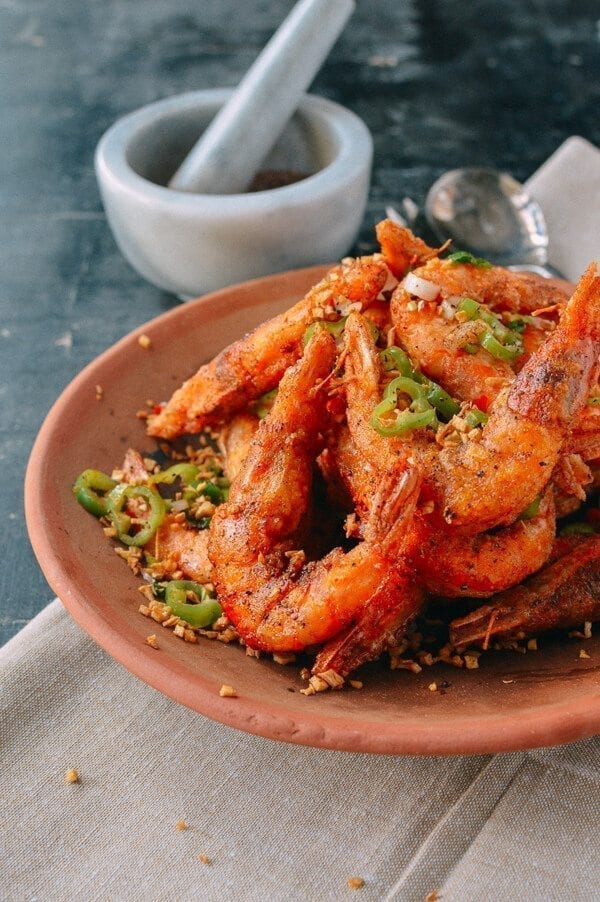

Salt and Pepper Shrimp

This crispy salt and pepper shrimp is sure to please
Salt and pepper shrimp is crispy, salty, peppery, and delicious. The fragrance will have you salivating.
Ingredients
Salt and pepper mixture
- 2 parts whole peppercorns
- 1 part sea salt
Rest of dish
- 1 pound large shrimp, shells on and deveined, with or without heads
- 3 tablespoons potato starch or cornstarch
- 1/3 cup oil
- salt and pepper mixture
- 6 cloves garlic, finely chopped
- 1 long hot green or red pepper, thinly sliced
Steps
To make the salt and pepper mixture
- In a small pot over medium low heat, dry roast the whole peppercorns of your choice for 15 minutes, until very fragrant. Take care not to burn them, adjusting the heat as needed. Cool completely and use a spice grinder or mortar and pestle to grind the peppercorns down to a powder.
- In the same pot over medium heat, dry roast the salt until it turns slightly yellow in color. Let it cool and combine it with the ground pepper.
To prepare the dish
- Rinse the shrimp and pat them thoroughly dry with a paper towel. Dredge them in potato starch or cornstarch
- Heat the oil in a small cast iron skillet to 375 degrees. Quickly lay the shrimp in the oil with about an inch of space in between each shrimp, and fry the shrimp in batches, cooking each side for 30 seconds. Set aside on a paper towel-lined plate, and sprinkle with salt and pepper powder to taste.
- In the wok, heat 2 tablespoons of oil over medium heat. Fry the garlic until just golden brown (careful not to burn it!), and set aside to drain on a paper towel lined plate.
- Remove any excess oil from the wok, so there's only a tablespoon or so left (you don’t want to use too much oil at this stage, as this is a “dry” dish). Add the peppers to the wok. Turn off the heat, and add the garlic back to the wok, stir-frying everything together for a minute. Add the shrimp to the wok, and gently toss everything for 10 seconds, sprinkling over a bit more of your salt and pepper mixture. Serve!